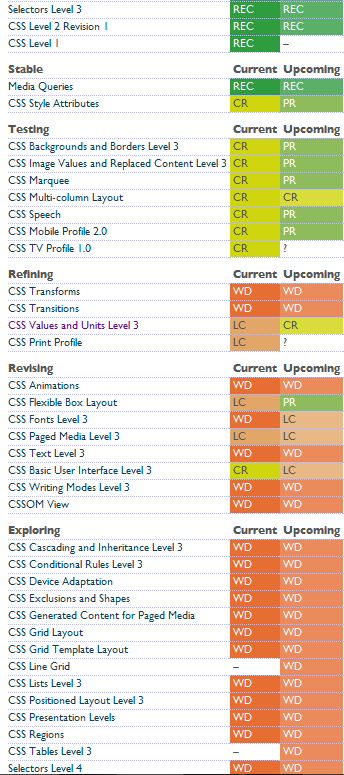
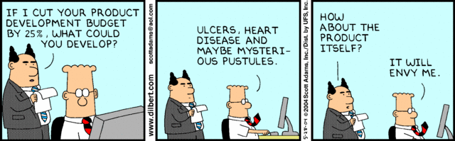

State of CSS



The proposed spec is NOT about variables and I seriously wonder if we should not change the title of the document. You may call the feature it introduces "variables" but at the deeper level, that's not about variables.Daniel Glazman, CSSWG Co-Chair, August 2012
[CSS Cascading Variables is] a family of custom author-defined properties known collectively as custom properties, which allow an author to assign arbitrary values to a property with an author-chosen name, and variables, which allow an author to then use those values in other properties elsewhere in the document.
First requested in 1998, first W3C proposal: 2008, first public draft April 2012

Lines of CSS: 1493
Total File size: 31.85KB (1 file)
Lines of CSS: 2270 Up 52%
Total File size: 61.93KB (12 files)
Lines of CSS: 19712 Up 860%!
Total File size: 336.30KB (12 files)
 smacss.com - A great e-book on modular CSS by Jonathan Snook
smacss.com - A great e-book on modular CSS by Jonathan Snook


Re-using CSS has always between projects has always been a challenge, tips and tricks from one project get lost and re-written for another. CSS pre-processors can change that
Yes, but don't think like that
Stylus
learnboost.github.com/stylus - A third way by @tjholowaychuk
 smacss.com - A great e-book on modular CSS by Jonathan Snook
smacss.com - A great e-book on modular CSS by Jonathan Snook
{kind=link}